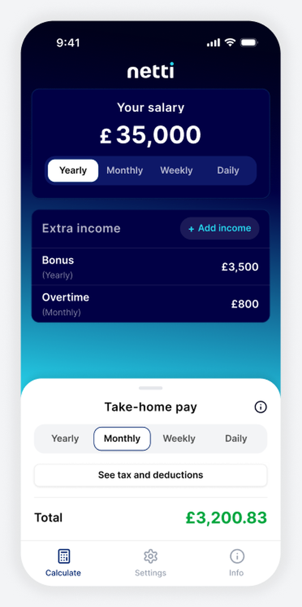
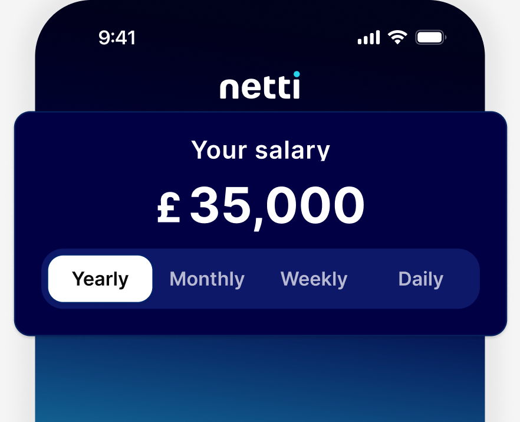
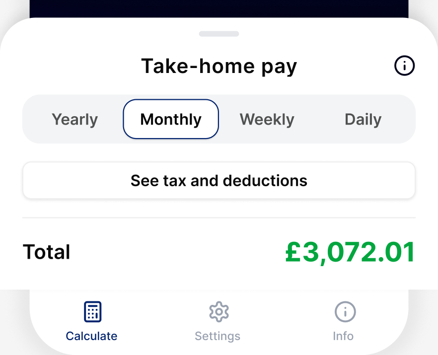
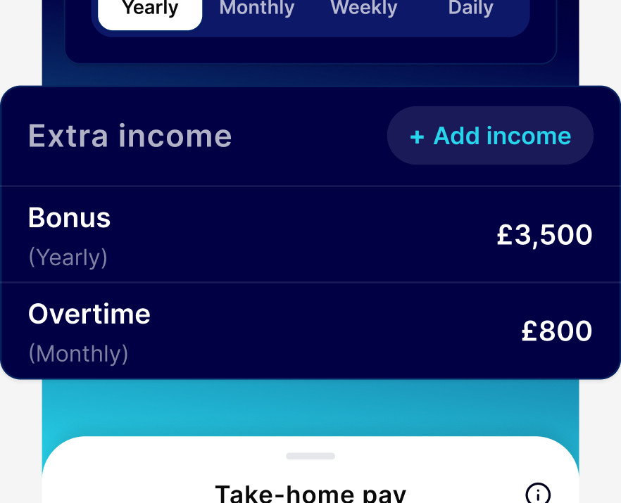

Know what you actually take home.
Netti turns your gross salary into the number that matters — tax, National Insurance, pension and student loan all worked out, so you always know what's really yours.
Free to use. Netti Pro unlocks bonus, overtime and offer comparisons for a one-off £1.99.

The questions your payslip doesn't answer.
What's my actual take-home?
Enter your salary once and see the real monthly number after tax, NI, pension and student loan — not just the headline figure.
What happens if I get a bonus?
Model a bonus, overtime or commission payment and see exactly how much of it you actually keep, before it lands.
Is this new offer actually better?
Compare your current salary against a job offer side by side, and see the real difference — not just the number on the letter.
Three steps to your real number.

Enter your salary
Gross pay, tax code, pension contribution and student loan plan — takes under a minute.

See the full breakdown
Tax bands, NI, pension and take-home pay, broken down monthly and annually — no guesswork.

Model real scenarios
Bonus, overtime, raises, job offers — with Netti Pro, see the marginal impact of every extra £1.
What does a £5,000 bonus actually pay?
A common question with a less common answer. Here's how it plays out for someone on a £48,000 salary.
The scenario: £48,000 base salary, standard tax code, no other income, receiving a one-off £5,000 bonus in the same tax month.
Because the bonus pushes part of that month's pay into the higher tax band, it's taxed at a higher marginal rate than the rest of the salary — which is why the amount that actually lands is often smaller than people expect.
This is exactly the kind of question Netti Pro is built to answer before the money arrives, not after.
Try it with your numbers| Item | Amount |
|---|---|
| Gross bonus | £5,000 |
| Income tax | −£1,546 |
| National Insurance | −£236 |
| You actually keep | £3,218 |
Illustrative figures for a 2026/27-style example — Netti's in-app calculation keeps pace with current tax year rates and your exact tax code. Not tax advice.
One unlock. No subscription.
Everything you need to model real income decisions — bonus, overtime, commission, and job offers — for a single one-off payment.
Unlock Netti Pro — £1.99- Bonus, overtime & commission modelling
- Marginal tax insight — what your next £1 is worth
- One-off payment, yours for good
Common questions.
Is Netti free to use?
Yes. The core calculator — salary, tax, National Insurance, pension and student loan — is free. Netti Pro is a one-off £1.99 unlock for bonus, overtime and job-offer modelling.
What does Netti Pro unlock?
Bonus, overtime and commission modelling, marginal tax insight (what your next £1 is worth), and side-by-side salary and offer comparison. It's a single one-off payment, not a subscription.
Is my salary information private?
Yes. Everything you enter — salary, tax code, pension, income figures — is calculated and stored locally on your device. It's never transmitted to or stored on Netti's servers.
Do I need to create an account?
No. Netti works fully without sign-up — just install and enter your numbers.
Does Netti work for Scotland, Wales and Northern Ireland, not just England?
Yes. Netti applies the correct regional Income Tax bands, including Scotland's separate rate structure.
Does Netti handle student loans and pension contributions?
Yes. All current UK student loan plans (1, 2, 4, 5, and Postgraduate) are supported, along with both salary sacrifice and relief-at-source pension contributions.
Is Netti kept up to date with the current tax year?
Yes. Netti's calculations use the current UK tax year's rates and thresholds, and are updated as they change.
Is Netti available on Android?
Not yet — Android support is on the roadmap. Netti is currently available on iOS only.
Does Netti give financial or tax advice?
No. Netti is a calculator, not financial advice.
How do I get support or report an issue?
Email us at [insert contact email].
Download Netti, free.
Available now on iOS. Pension and student loan calculations are always free — Pro unlocks the advanced income modelling.
Netti is built by SquaredMc — see what else we're working on.